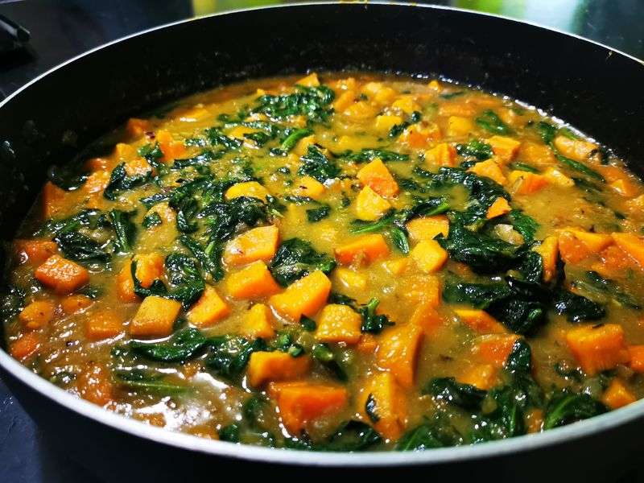

Curry Thaï crémeux aux patates douces
Préparation: 10 minutes
Cuisson: 20 minutes
Total: 30 minutes
Ingrédients
-
1 c. à table de huile

-
2 oignons
-
2 patates douces
-
4 t de bébés épinards
-
3 c. à table de pâte de curry
-
1 conserve de lait de coco (414 mL)
-
3/4 t de bouillon
-
cacahuète
-
coriandre
-
sauce de poisson